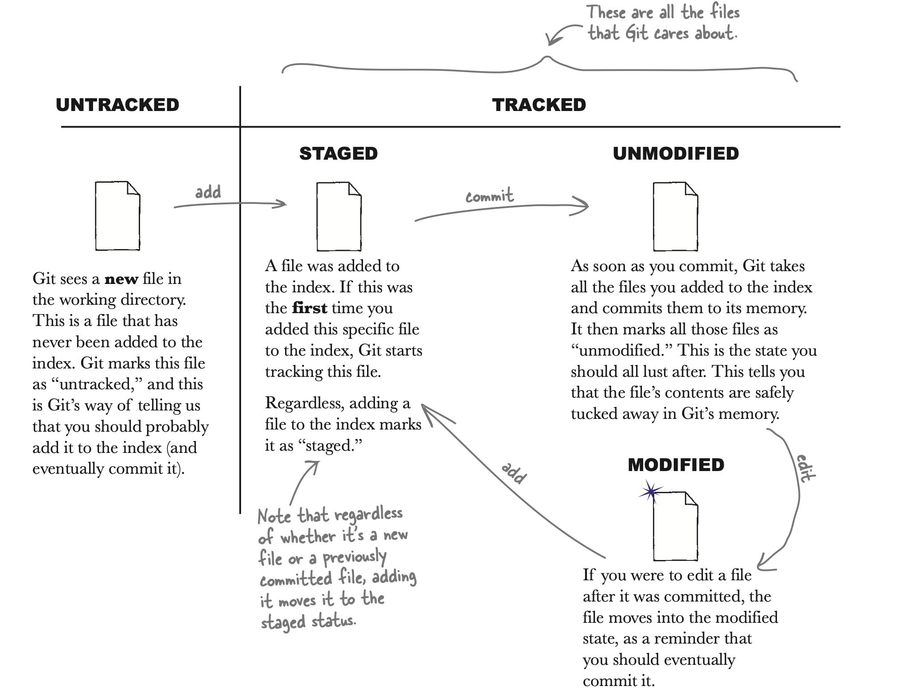
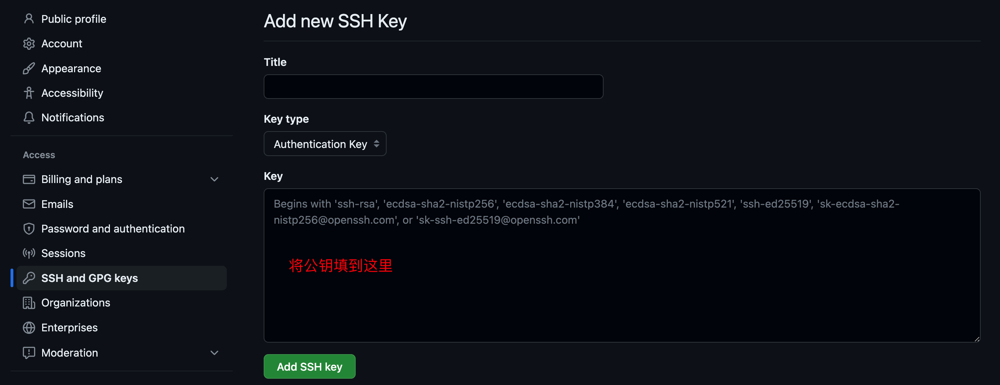

使用
通常有两种建立 Git 版本库的方式：
当工作区中的文件发生变化时，通过以下命令将这些变化添加到暂存区：
将所有变化都提交到暂存区后，再通过命令 git commit 将暂存区中的所有内容存为一个结点，存到当前 HEAD 指针所指的结点后面，并将 HEAD 指针指向当前结点。
Git 要求提交时需要附带说明信息，因此完整的命令为：
使用 Git 管理文件的一般流程即：在工作区下编辑，在暂存区中积累修改，之后把累积的修改一次性提交。

版本控制¶

分支¶
分支其实就是为某次提交起个别名做上标记，相当于是一个“里程碑”，之后便可以“分道扬镳”。
| 创建分支 | |
|---|---|
| 切换分支 | |
|---|---|
通过命令 git branch 可以查看有哪些分支及其当前处于哪个分支。初始分支为 main。
远程操作¶
连接 Github/Gitee¶
由于本地 Git 仓库和 GitHub 仓库之间的传输是通过 SSH 加密的，所以需要一点设置：
-
创建 SSH Key。
在用户主目录下看看有没有
.ssh目录，其中有没有id_rsa（私钥）、id_rsa.pub（公钥）这 2 个文件。若没有，则需要先创建： -
将公钥配置到 Github。

-
测试能否连接成功。
连接远程库¶
在 GitHub 中新建一个仓库（此处以 learnGit 为例），再在本地 Git 所管理的仓库中运行命令：
关联一个远程库时必须给远程库指定一个名字，并非 Github 上的仓库名，一般命名为 “origin”。
如此便在本地仓库与远程仓库之间建立了连接，可通过 git remote -v 查看远程库信息。
将本地仓库中的文件推送到 origin 的 main 分支：
由于第一次推送时远程库是空的，因此这里加上了 -u 参数，这样不但会把本地当前分支内容推送至远程 main 分支，还会把本地当前分支（main）和远程的 main 分支关联起来，在以后的推送或者拉取时就可以简化命令，直接使用 git push origin main 即可。
解除本地仓库与远程仓库之间的连接（远程库依旧存在）：